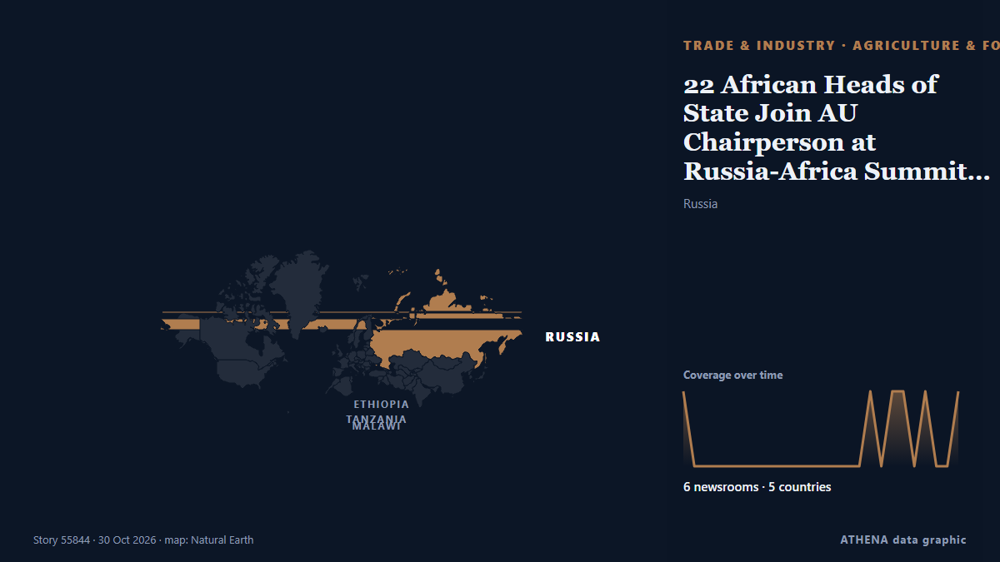

Landwirtschaft und Ernährung
| 18. Okt. | 0 |
|---|---|
| 19. Okt. | 1 |
| 20. Okt. | 0 |
| 21. Okt. | 0 |
| 22. Okt. | 0 |
| 23. Okt. | 1 |
| 24. Okt. | 0 |
| 25. Okt. | 1 |
| 26. Okt. | 2 |
| 27. Okt. | 0 |
| 28. Okt. | 6 |
| 29. Okt. | 5 |
| 30. Okt. | 1 |
| 31. Okt. | 0 |
Schlagzeilen werden auf Englisch angezeigt, wie veröffentlicht.

22 African Heads of State Join AU Chairperson at Russia-Africa Summit in Moscow
By Yankuba Jallow Twenty-two African countries are represented by their heads of state at the third Russia-Africa Summit in Moscow, where Russian President Vladimir Putin and African leaders are… von Foroyaa
Putin says Russia to continue playing role of ‘responsible’ supplier of grain to Africa
After Russia-Africa summit, Russian president says Moscow committed to building ‘strategic, multifaceted’ partnership with continent. von Anadolu Agency (English)
Ukraine verifies whether Russia has resumed Black Sea grain exports
Ukrainian agricultural authorities are verifying public and non-public data following reports that stationary Russian grain carriers have begun moving. von Ukrainska Pravda (English)
DA: Weak peso to push up imported rice, fertilizer prices
Meanwhile, the Philippines' rice import volume is expected to increase by November and December in anticipation of severe El Niño. von Rappler
African Swine Fever resurfaces at farms in six districts
THE Department of Agriculture (DA) said it hopes to release for commercial sale a second African Swine Fever… von BusinessWorld
Wild boar sightings increase on Zagreb streets as city introduces special traps
The gun trap is suspected to have been planted by an unidentified poaching gang that trespassed on farmer’s property to hunt wild boars. von The Hindu
Bangladesh presses India before Ganges water treaty expires
RAJSHAHI: With a 30-year Ganges water-sharing treaty with India expiring in December, Bangladesh fears failure to strike a new deal could deepen water shortages, threatening tens of millions of… von New Straits Times
The ethanol mirage: Why E100 won’t Solve India’s oil import problems
The government assured better prices to those who grew crops used to make ethanol. von Scroll.in
Farmers face 'intimidation' from nighttime trespassers with lurcher dogs hunting hares
Dáil told of electric fencing being cut and livestock escaping when hunters come onto farmland with their dogs to chase and kill hares. von Irish Examiner
Rice smuggling bid foiled in Gua Musang: 25 tonnes of Thai rice seized, driver held over dubious invoices
GUA MUSANG, Oct 29 — The General Operations Force (GOF) has seized a lorry carrying 25 metric tonnes of Super Impo... von Malay Mail
US, EU and 30 countries warn of famine risk in Sudan, call for aid
Countries also urge Sudan's warring parties to 'lift all impediments on humanitarian assistance'. von Al Jazeera English
Common Dental Problems and How Dentists Treat Them
Maintaining good oral health is essential for overall well-being, yet many people put off visiting... von Newsroom Panama